それは昨年の10月下旬のこと。
僕はキャンパーになって初めての、キャンプ最高のシーズンでもある秋を迎えていた。
夏生まれにもかかわらず、あまり夏が得意でない僕としても、秋というのは最高に過ごしやすい季節。
そんな頃に見つけたのが、秩父にある満願ビレッジオートキャンプ場だった。
どうやら、自然豊かな秩父の風景と満天の星空が有名なキャンプ地らしく、その口コミを見た瞬間、「これは行くっきゃない！」とすぐに予約をしている自分がいた。
いつも一緒にキャンプをする相棒の予定も聞かず、思わず日程を決めてしまっていたが、幸いにも相棒の都合もよく助かった。笑
とにもかくにも、秩父でのキャンプも決まったところで、次にしたのは新規ギアの購入だ。
今回3回目となるキャンプで、僕は試してみたいことが何個かあった。その実行に向け、前日の晩まで、それはもうワクワクを抑えきれない子どもさながらに、そのひとつひとつを綿密に確認していた。このやる気を、もっとほかのところで発揮できていればなと、元も子もないことも思いながら。
そして、当日。天気は気持ちのいい小春日和！
例に漏れず、今回も交通機関と徒歩で現地へ向かうわけだが、いつもと違うのは、途中駅の西武秩父まで特急を使ったところだろうか。
鈍行で行けなくもないが、車を使わないキャンパーの宿命でもある、重いリュックを背負いながら何度も電車を乗り換えるのが非常に憂鬱だったため、今回は思い切って特別急行で向かうことにしたのである。
相棒とは池袋駅で待ち合わせし、西武鉄道の特急ラビューに乗り込む。さあ、出発だ！
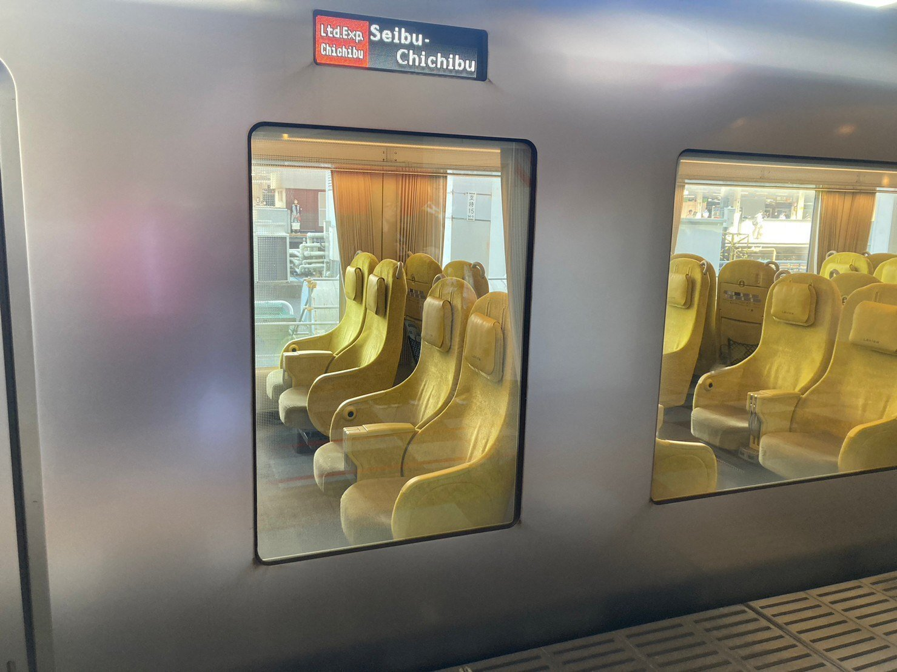
都内有数の繁華街でもある池袋から秩父の玄関口とも呼ばれる西武秩父まで、ラビューなら80分ほど。
相棒と会話しながらであれば、それはもうあっという間。そして、西武秩父駅に降りて、真っ先に出迎えてくれたのが雄大な空と山々。「よく来たな！」と言わんばかりの大自然に、僕は心のうちでお辞儀しながらシャッターを押す。
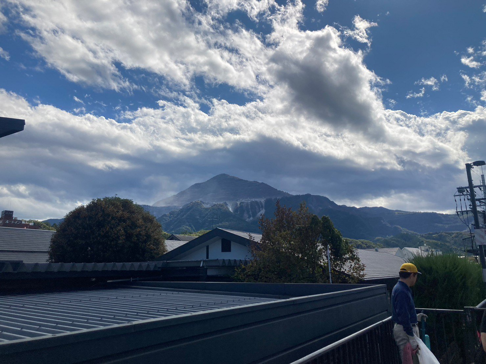
ちなみに西武秩父駅は、秩父の山と物産が融合したスイス風のユニークなスタイルの駅として、関東の駅百選として認定されている。
2017年には駅前に温泉施設・祭の湯が開業。隣接するちちぶみやげ市でも、秩父ならではのお土産が目白押し。その賑わいは一層増している。
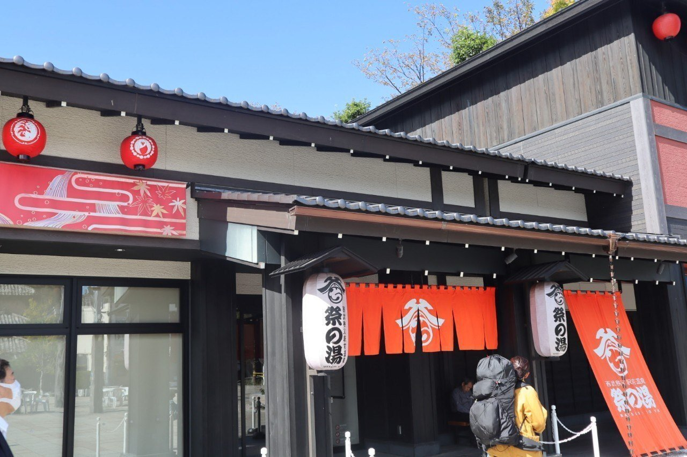
祭の湯でひとっぷろ浴びたいところではあったがグッと堪え、我々は徒歩圏内の秩父鉄道・御花畑駅から皆野駅まで電車に乗り、そこからバスでキャンプ場へ。
そして、ここで嬉しいサプライズが。御花畑駅ホームのベンチで電車を待っていたら、ポーという蒸気機関車らしき汽笛が響いた。やがて姿を現したのが、あまり生で見る機会もない、SLだったのだ！
予期していなかった出会いに、思わず相棒とともに写真をパシャパシャ。辺りを見渡すと、ほかの観光客らしき人たちもこぞって写真を撮っている。そりゃそうだわな。こんな機会、めったにないもん。
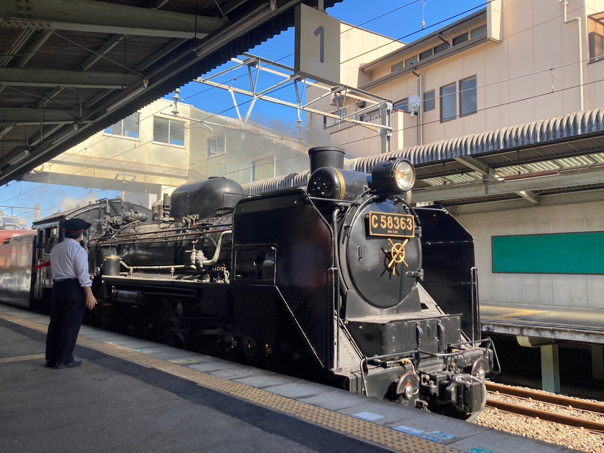
「いいもの見れたな！」と相棒と幸先のよさを実感しながら、電車とバスを乗り継ぎ、いざ現地へ！
最寄りのバス停から5分ほどで到着できてとても助かったし、何よりここの魅力のひとつが、高台のデッキに設置されたテントサイト。1デッキにつき1組なので、隣に別の組がくることはない。最高にプライベート空間が確保されているわけなのだ！
https://manganvillage.com/about/autosite
(↑公式HPからテントサイトの詳細が見れます！ キャンプ好きなら、この空間の気ままさを一度は試してほしい！)
高台からの眺めを味わいながら、休憩。息も整ってきたところで、テントの設営と薪割りをスタート。
そして、いつもテントを持ってきてくれる相棒が不敵な笑みを浮かべたと思うと、なんと新調したとの報告が……！ 思わずハイタッチし、シックな黒が光るDODワンポールテントを張ったのだった。
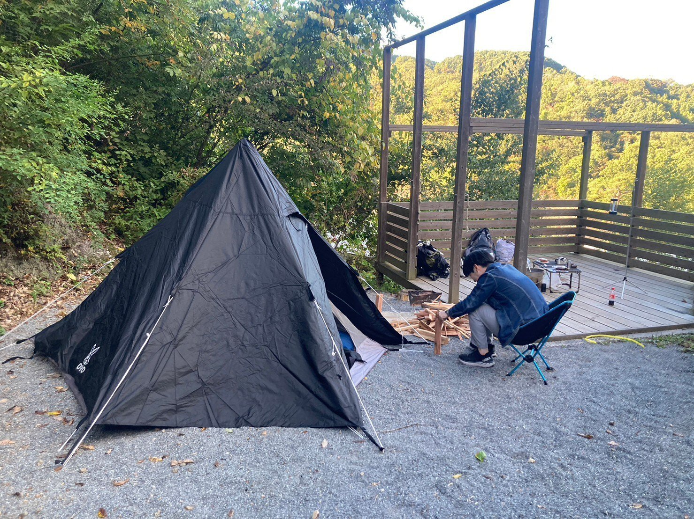
ひとまずの準備を終えたところで、結構な汗をかいていた我々が所望したのが、近くにある満願の湯。
今いるテントサイトから徒歩2～3分、通常なら約1,000円かかるところをキャンプ場の宿泊者なら1回のみ入浴無料という太っ腹！ これはもう行くっきゃない！
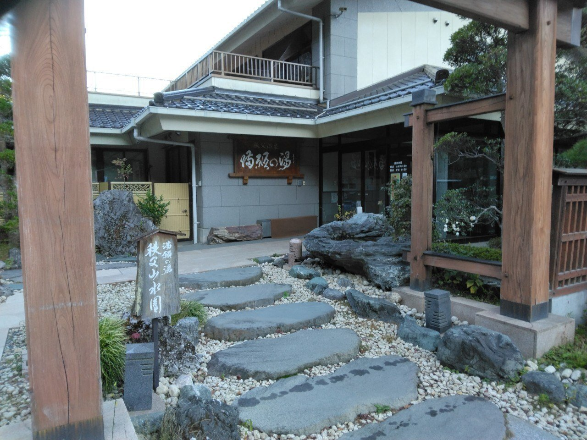
夕方にもなってきたし、小腹も空いたからいっちょやるか！
爽やかな入浴後、そう会話しながら、先ほど割っておいた薪を焚き火台に放り火を灯す。
そして、お酒を開けながら、前々からやってみたことのひとつ、焚き火で焼き鳥！
実はこれ、もうかれこれ10年以上通っている美容師さんから教えてもらったこと。
僕よりだいぶ先輩キャンパーでもある彼に、おすすめキャンプ飯を聞いてみたところ、真っ先にこれを教えてもらったわけなのだ。
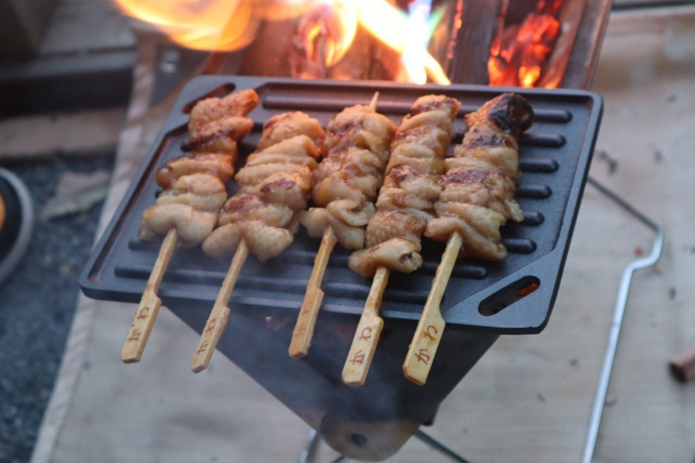
最高のつまみがあると、相棒との話もいつにも増して弾んでいく。
あれやってみたいな。これもどうよ？ そんな風にして、キャンプやそれ以外のことなど今後してみたい未来の展望を描いていたら、もう空は夜に。
ここらで、もうひとつやっておきたいことをやろう！
ということで、僕はおもむろに焚き火の中にポイッとあるものを放り込む。相棒が神妙な顔でそれを見つめていると、あら不思議！ 焚き火の色が鮮やかな七色へと変わっていくではないか！
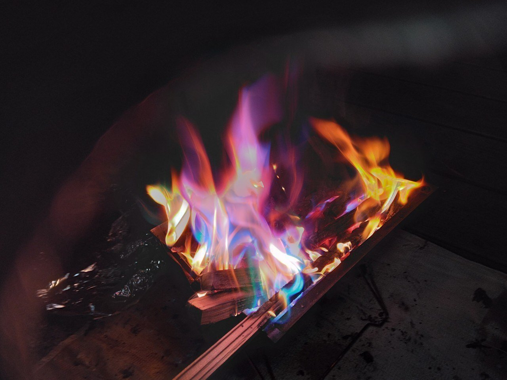
色の変わる効果は30分ほどだが、それでも、“いつもと違う焚き火をしてみたい欲”は十分満たされていく。
ほどなくして、焚き火も終盤。火が落ち着いてきた頃に、相棒が撮った写真が最高にエモかったので、それも掲載しておきますね^^
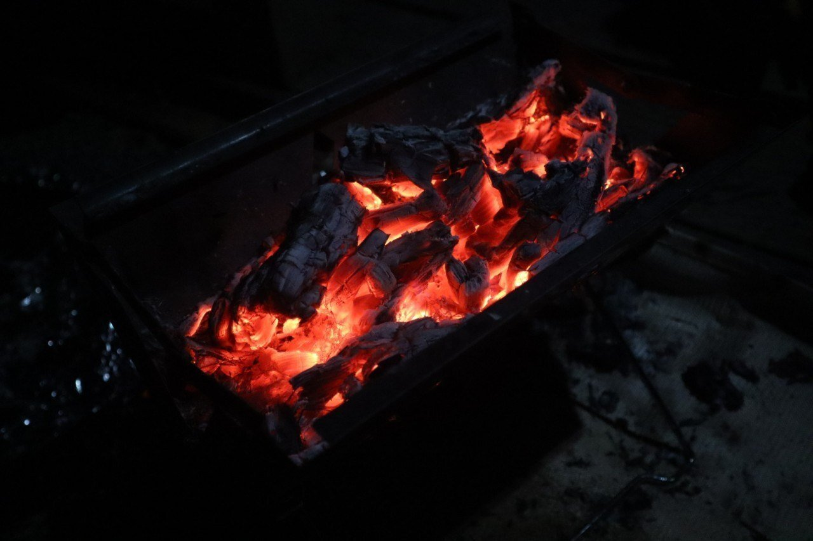
そして、ふと夜空を見上げると満天の星空が！
所有しているカメラが夜空を綺麗に撮れるものではなかったので、残念ながら撮影はできなかったがイメージ図だけ載せときます。それはもう本当に、見事な夜空だった。
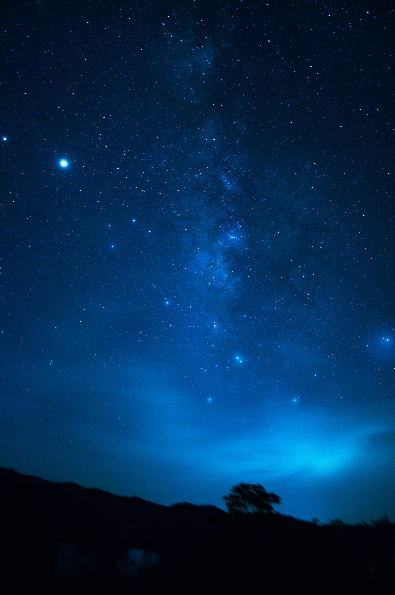
そんなこんなでキャンプも大詰め！
翌朝は早起きし、周辺を散策。自然豊かな秩父の風景に癒されながら、帰路へ。
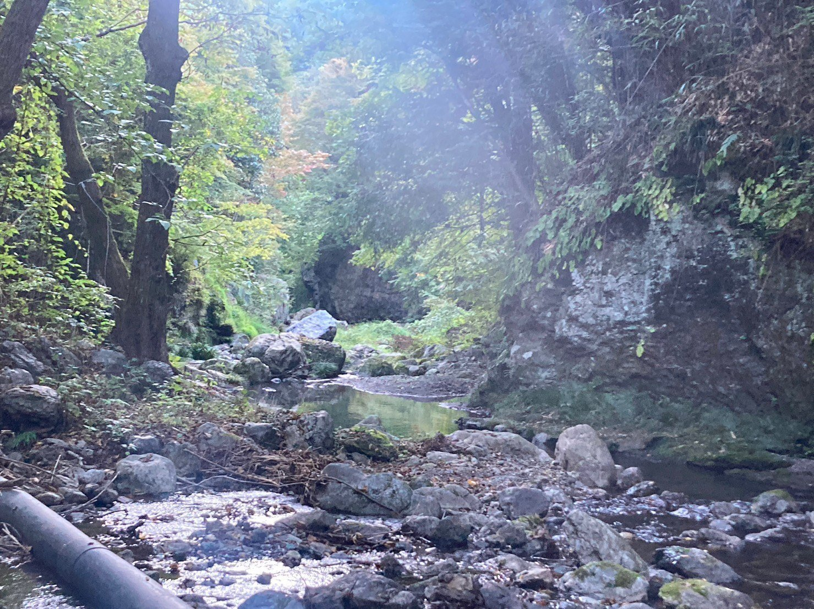
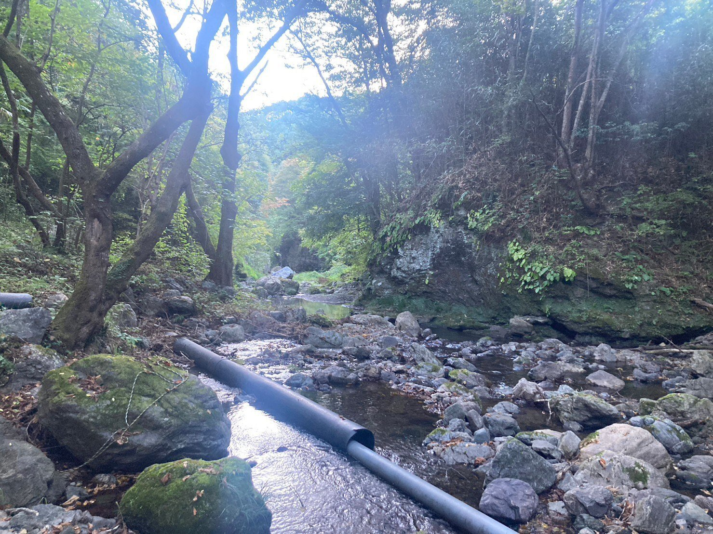
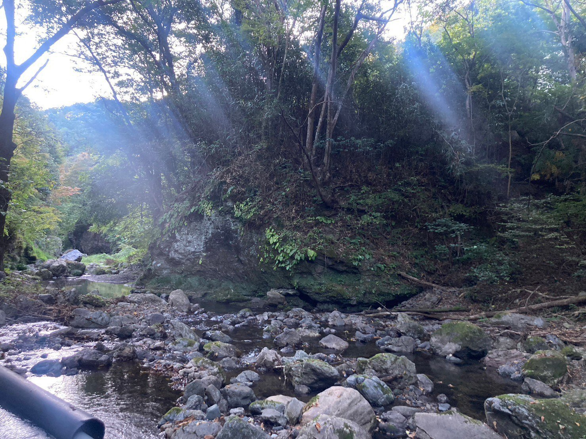
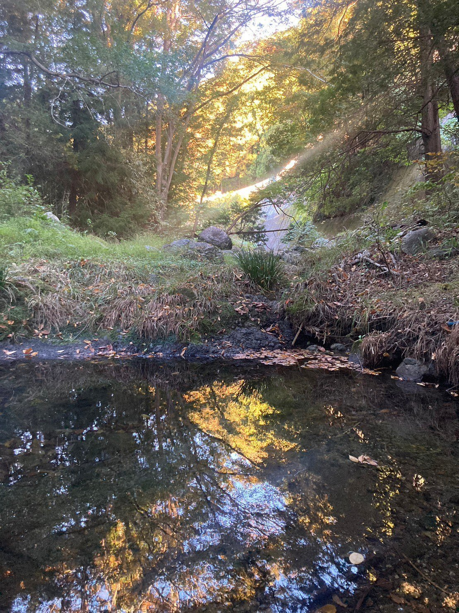
そうそう。帰りは夕方の電車だったので、乗車前に、行きの時に断念していた祭の湯にも入ってきました♪
ああ。秩父の雄大さとキャンプは否応なしに相性がいいな。
そんなことを痛感した今回のキャンプ旅。次回はどんなところでキャンプしよう？ そんな風にワクワクする気持ちは、何度経験しても良いものなのである。
【今回訪れたキャンプ場】
満願ビレッジオートキャンプ場(埼玉県秩父郡皆野町下日野沢3902-1)